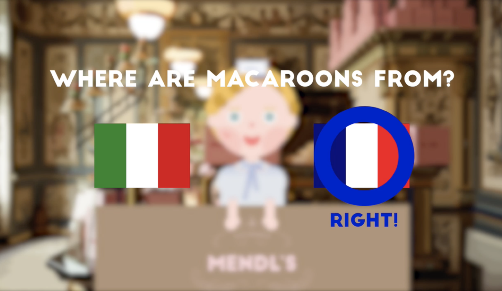
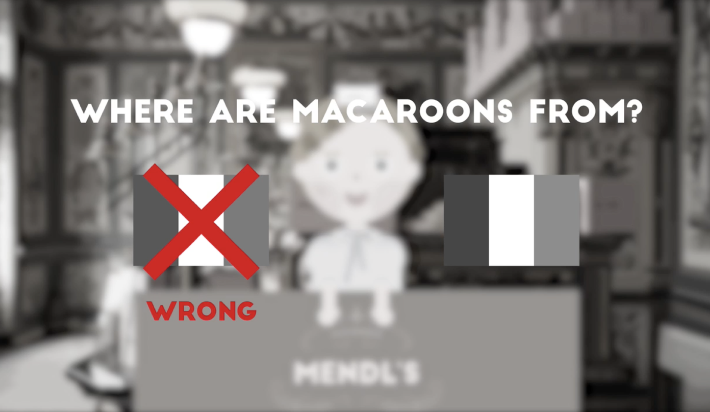
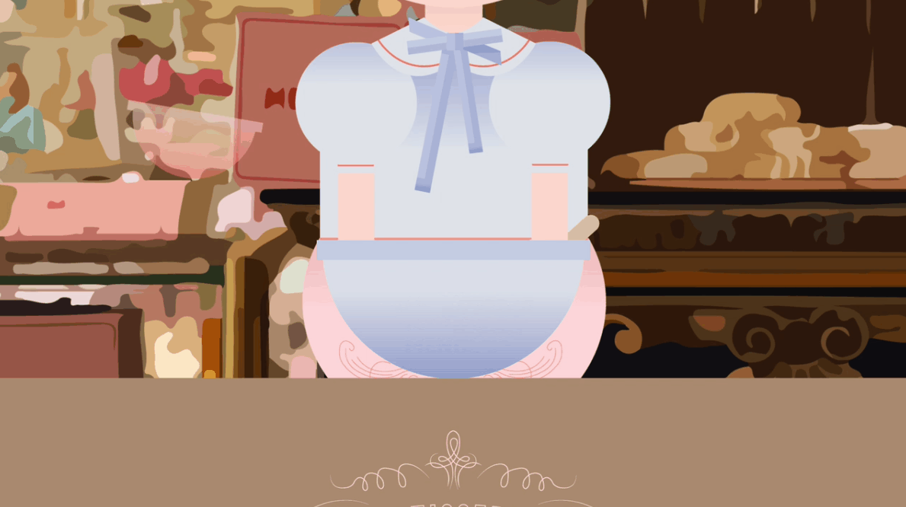
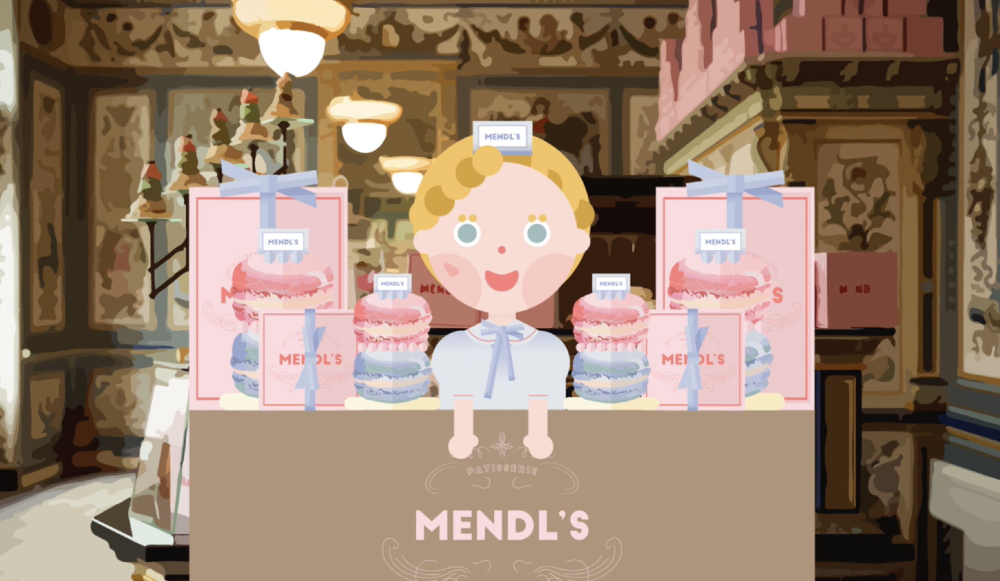

<!DOCTYPE html>
<html>
    <head>
        <meta charset="utf-8" />
        <meta name="viewport" content="width=device-width, initial-scale=1">
        <title>Interactive Video</title>
        <link rel="stylesheet" type="text/css" href="../css/styles.css">
        <link rel="preconnect" href="https://fonts.googleapis.com">
        <link rel="preconnect" href="https://fonts.googleapis.com">
        <link rel="preconnect" href="https://fonts.gstatic.com" crossorigin>
        <link href="https://fonts.googleapis.com/css2?family=Courier+Prime:ital,wght@0,400;0,700;1,400;1,700&family=Montserrat:ital,wght@0,100..900;1,100..900&display=swap" rel="stylesheet">
        <link rel="icon" type="image/png" href="../dy_favicon.png">
    </head>
</html>
<body>
    <div class="mode-toggle">
        <button id="darkModeToggle">
            
        </button>
    </div>
    <header>
        <div class="language-selector">
            <a href="../sub_video_kr.html">KR</a>
            <div class="lang-divider"></div>
            <a href="../en/sub_video_en.html">EN</a>
            <div class="lang-divider"></div>
            <a href="#" class="active">CN</a>
        </div>
    </header>
    <div class="sub-contents">
        <a href="index_cn.html">&lt; Back to Home</a>
        
        <div class="sub-contents-text">
            <div class="sub-text-title">Overview</div>
            <div class="sub-text-p">
                互動影片 與傳統影片不同，提供觀眾選擇的機會，觀眾可以根據選擇的選項改變影片的流向。這種格式不僅僅是觀看影片，而是讓觀眾能夠參與其中，主導故事的發展。觀眾可以根據各個選擇的節點進行導航，使影片內容更加互動和吸引人。
                <br/><br/>
                在這個專案中，我在規劃和設計部分的貢獻度為 50%。我使用 Photoshop 創建了圖形設計，並使用 After Effects 添加了動態效果，以提升影片的視覺效果。此外，我將每個節點所對應的影片上傳至 eko 網站，提供用戶不同的探索路徑。
                <br/><br/>
                該專案的主題是「烹飪」，設計過程中汲取了電影《大佛寺酒店》的靈感，實現了獨特而吸引人的視覺風格。這種靈感體現在影片的色彩搭配、圖形元素以及整體場景中，旨在創造類似於電影的沉浸式體驗。
                <br/><br/>
                在專案的整體過程中，我們著重於讓觀眾能夠擔任故事創作者的角色，而不僅僅是被動的觀察者。這種方法有效地傳達了互動影片所提供的新型媒體體驗。
            </div>
        </div>
                
                
        
        
        
        <div class="sub-contents-text">
            <div class="sub-text-title">Link</div>
            <div class="sub-text-p">
                    <a href="https://video.eko.com/v/zrBK3z">https://video.eko.com/v/zrBK3z</a>
            </div>
        </div>

    <footer>
        <p>&copy; 2025 Dayeong Kim. All rights reserved.</p>
    </footer>

    <script src="../js/scripts.js"></script>
</body>